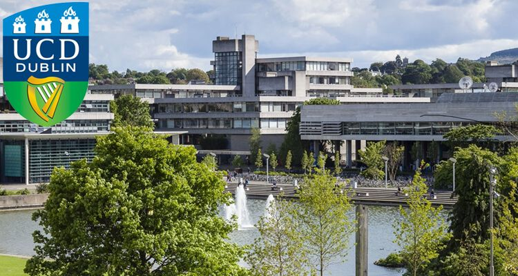

Upcoming Working Group Meetings
-

WG meeting · 25–28 May 2027Quantum Turbulence: From Laboratory to Cosmic Environments, From Atomic Gases to Superfluid Stars (WG2 meeting)
This meeting unites experimental, theoretical, and computational researchers to explore quantum turbulence and vortex dynamics across scales, from laboratory quantum fluids and optics to analogue gravity and neutron stars. By bridging low-temperature physics, quantum optics, astrophysics, and classical fluid dynamics, it aims to uncover universal turbulence mechanisms and spark new interdisciplinary collaborations.
There is no registration fee. Depending on participant numbers, there may be a flat-rate food contribution of around 80 EUR (including VAT) covering coffee breaks and lunches; the workshop dinner is optional and charged separately. Participants affiliated with institutions in COST member states may request funding. The workshop webpage will be announced soon.
Details of earlier events are on the Past events page.